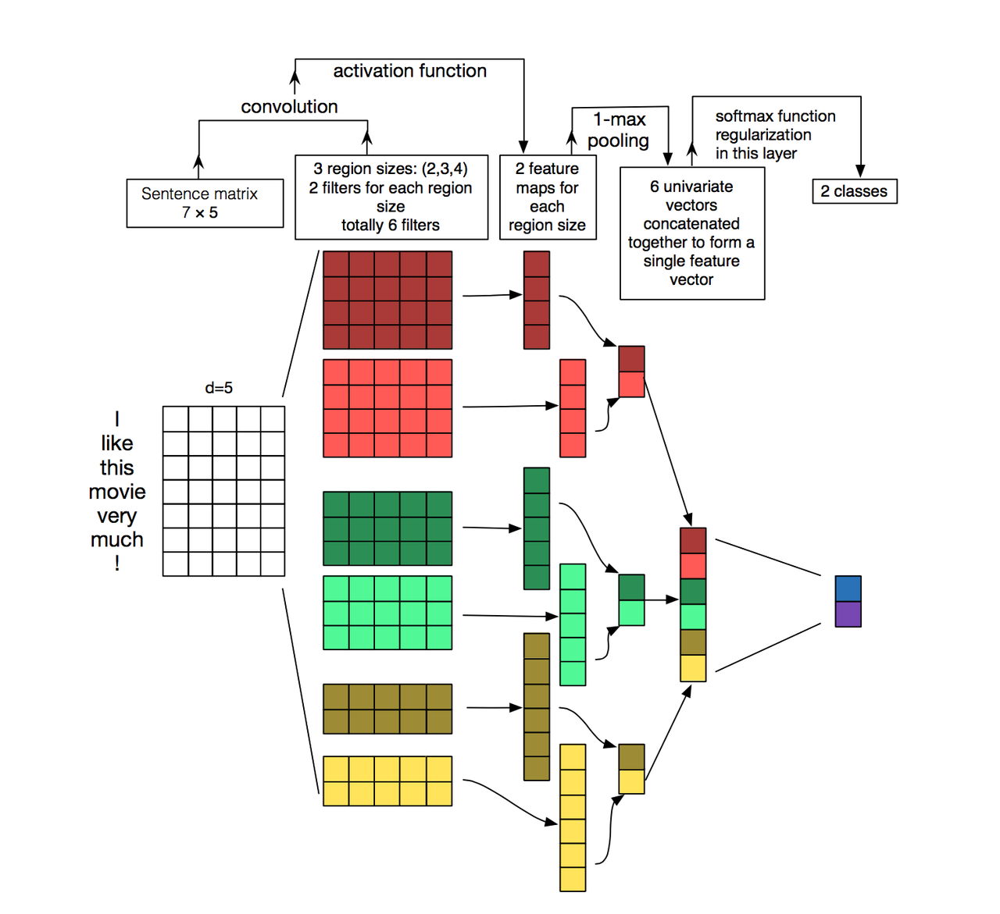

TextCNN with Pytorch and Torchtext on Colab
PyTorch is a really powerful framework to build the machine learning models. Although some some features is missing when compared with TensorFlow (For example, the early stop fucntion, History to draw plot), its code style is more intuitive.
Torchtext is a NLP package which is also made by =pytorch= team. It provide a way to read text, processing and iterate the texts.
Google Colab is a Jypyter notebook environment host by Google, you can use free GPU and TPU to run your modal.
Here is a simple tuturial to build a TextCNN modal and run it on Colab.
The TextCNN paper was published by Kim in 2014. The model's idea is pretty simple, but the performance is impressive. If you trying to solve the text classificaton problem, this model is a good choice to start with.
The main architechture is shown below:

It uses different kenels to extract text features, then use the softmax regerission to classify text base on the featrues.
Now we can build this model step by step.
First build the model. The model I use is CNN-multichannel, which contains two sets of word emmbedding. Both of them is the copy of word embedding generate from corpus, but only one set will update embedding during training.
The code is below:
class textCNNMulti(nn.Module):
def __init__(self,args):
super().__init__()
dim = args['dim']
n_class = args['n_class']
embedding_matrix=args['embedding_matrix']
kernels=[3,4,5]
kernel_number=[150,150,150]
self.static_embed = nn.Embedding.from_pretrained(embedding_matrix)
self.non_static_embed = nn.Embedding.from_pretrained(embedding_matrix, freeze=False)
self.convs = nn.ModuleList([nn.Conv2d(2, number, (size, dim),padding=(size-1,0)) for (size,number) in zip(kernels,kernel_number)])
self.dropout=nn.Dropout()
self.out = nn.Linear(sum(kernel_number), n_class)
def forward(self, x):
non_static_input = self.non_static_embed(x)
static_input = self.static_embed(x)
x = torch.stack([non_static_input, static_input], dim=1)
x = [F.relu(conv(x)).squeeze(3) for conv in self.convs]
x = [F.max_pool1d(i, i.size(2)).squeeze(2) for i in x]
x = torch.cat(x, 1)
x = self.dropout(x)
x = self.out(x)
return x
Second, convert text into word index, so each sentence become a vector for training.
TEXT = data.Field(lower=True,batch_first=True)
LABEL = data.Field(sequential=False)
train, val, test = datasets.SST.splits(TEXT, LABEL, 'data/',fine_grained=True)
TEXT.build_vocab(train, vectors="glove.840B.300d")
LABEL.build_vocab(train,val,test)
train_iter, val_iter, test_iter = data.BucketIterator.splits(
(train, val, test), batch_sizes=(128, 256, 256),shuffle=True)
=Field= defines how to process text, here is the most common parameters:
sequential – Whether the datatype represents sequential data. If False, no tokenization is applied. Default: True.
use_vocab – Whether to use a Vocab object. If False, the data in this field should already be numerical. Default: True.
preprocessing – The Pipeline that will be applied to examples using this field after tokenizing but before numericalizing. Many Datasets replace this attribute with a custom preprocessor. Default: None.
batch_first – Whether to produce tensors with the batch dimension first. Default: False.
=datasets.SST.splits= will load the =SST= datasets, and split into train, validation, and test Dataset objects.
=build_vocab= will create the Vocab object for Field, which contains the information to convert word into word index and vice versa. Also, the word embedding will save as =Field.Vocab.vectors=. =vectors= contains all of the word embedding. Torchtext can download some pretrained vectors automaticaly, such as =glove.840B.300d=, =fasttext.en.300d=. You can also load your vectors in this way, =xxx.vec= should be the standard word2vec format.
from torchtext.vocab import Vectors
vectors = Vectors(name='xxx.vec', cache='./')
TEXT.build_vocab(train, val, test, vectors=vectors)
=data.BucketIterator.splits= will returns iterators that loads batches of data from datasets, and the text in same batch has similar lengths.
Now, we can start to train the model. First we wrap some parameters into =args=, it contains settings like output class, learning rate, log inverval and so on.
args={}
args['vocb_size']=len(TEXT.vocab)
args['dim']=300
args['n_class']=len(LABEL.vocab)-1
args['embedding_matrix']=TEXT.vocab.vectors
args['lr']=0.001
args['momentum']=0.8
args['epochs']=180
args['log_interval']=100
args['test_interval']=500
args['save_dir']='./'
Finally, we can train the model.
model=textCNNMulti(args)
model.cuda()
optimizer = torch.optim.SGD(model.parameters(), lr=args['lr'],momentum=args['momentum'])
criterion = nn.CrossEntropyLoss()
steps=0
for epoch in range(1, args['epochs']+1):
for i,data in enumerate(train_iter):
steps+=1
x, target = data.text, data.label
x=x.cuda()
target.sub_(1)
target=target.cuda()
output = model(x)
loss = criterion(output, target)
optimizer.zero_grad()
loss.backward()
optimizer.step()
Here is the full colab file: textcnn.ipynb
Ref:
Comments
Comments powered by Disqus